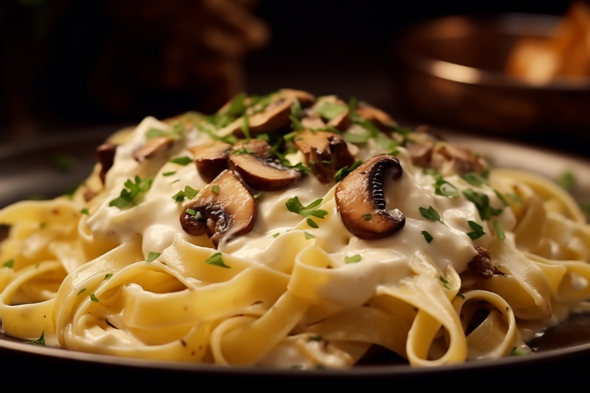

Creamy mushroom pasta
Make this creamy mushroom pasta dish on days when you need a big bowl of comfort. Cream, parmesan, white wine, lemon zest and parsley make this a rich and flavourful dinner
Preparation time
- Total: Approximately 40 minutes
- Preparation: 15 minutes
- Cooking: 25 minutes
Ingredients
- 300g tagliatelle
- 250g mushrooms
- 200ml double cream
- 200g parmesan
- 100ml dry white wine
- 2tbsp olive oil
- 1tbsp butter
- 1 onion
- 1 garlic clove
- 1 lemon , zest only
- 0.5 small bunch parsley
- Salt, pepper to taste
Instructions
- Heat the oil and butter: Heat the oil and butter in a medium saucepan. Fry the onion over a low heat for 10 mins or until softened and translucent.
- Add the ingredients: Add the mushrooms and cook for 10 mins over a medium heat. Add the garlic and cook for 2 mins. Add the wine and bring to a simmer, reduce the liquid by half.
- Add the cream: Add the double cream and bring to a simmer, then add the lemon zest and parmesan. Season with salt and plenty of black pepper.
- Cook the pasta: Meanwhile, cook the pasta following pack instructions. Reserve 100ml of the pasta water. Toss the pasta in the pan with the creamy sauce and enough of the reserved water to loosen. Stir through the parsley, divide into bowls and top with extra cheese, if you like.
- Enjoy: Serve hot, with additional salt and pepper if needed.
Nutrition
The table below shows nutritional values per serving without the additional fillings.
Calories 801kcal
Carbs 45g
Protein 29g
Fat 52g